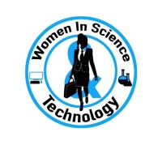

About Us
The purpose of Women in Science and Technology (WiST) is to educate and uplift women and allies with interest in the science, technology, engineering and/or mathematical fields by providing networking, educational opportunities, and community programs. This organization is a recognized student organization at North Carolina Agricultural and Technical State University and adheres to all University rules, regulations and policies as set forth in the Student Code of Conduct, the Student Organization Handbook, and as well as to all local, state and federal laws.
E-Board
| Advisor: Gina Bullock | Co-President: Kaelan Squires | Co-President: Layke Jones | Vice President: Jada Sheppard | Secretary: Milani Needam | Treasurer: Samaria Starkey | Event Coordinator: Kandis McKinney | Social Media Co-Chair: Anaya Maxwell | Social Media Co-Chair: Esther Kpognon | Program Manager: Normandy Carter |
Membership
All members are to pay dues of $15 for the academic year. Dues will cover the cost of a club t-shirt, and events held by the organization. Members may be asked to pay additional costs for specific events throughout the year if they choose to attend. If dues are not paid, members will not be in good standing and will lose their voting privilege
Any member of the organization can, at any time, voluntarily withdraw his/her membership from the organization. Members who withdraw will not be refunded for dues paid to the organization.
Members who exemplify behavior that does not reflect the values of Women in Science and Technology will be removed from membership. Values include, but are not limited to intolerable behavior and misconduct, as it distorts the image of the organization and its members. Members who fail to meet organization standards such as service hours, dues and attending less than half of the general body meetings in an academic year. If removed involuntarily, by the E-Board, members will not be refunded for dues paid to the organization.
Members are required to maintain the minimum 2.0 GPA per university standards. Members of the executive board are required to maintain the minimum GPA of 2.75. Allactive members must complete a membership application and register through 1891 Connect. Membersarealso required to participate in 10 community service hours per semester (20 hours total for the academic year).